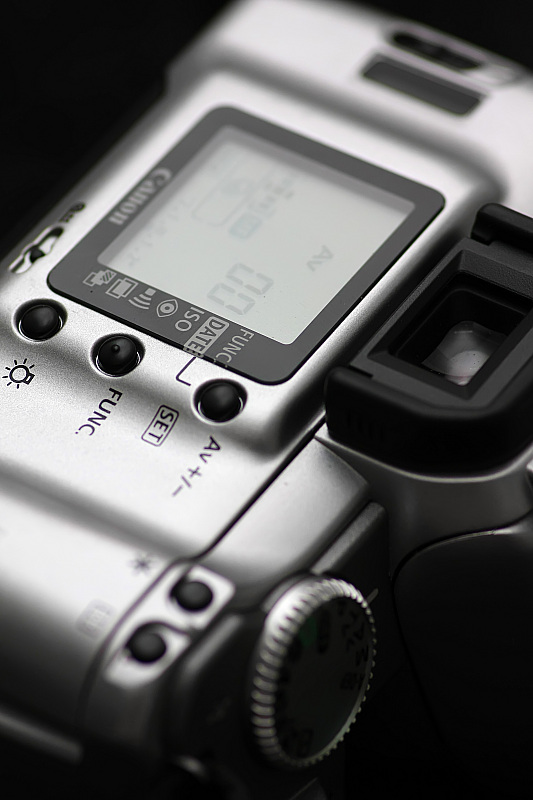

xuliangshey2012-07-07 13:29
vickycq2011-12-29 01:254.17 分
操作性 4.50功能性 5.00美观性 3.00趣味性 4.00耐用性 3.50性价比 5.00
siliconworm2010-07-21 03:574.83 分
操作性 5.00功能性 4.50美观性 5.00趣味性 5.00耐用性 4.50性价比 5.00

小稻2010-01-17 18:243.25 分
操作性 3.50功能性 3.50美观性 3.50趣味性 3.00耐用性 3.00性价比 3.00
喝醉的虫子2007-02-07 20:354.42 分
操作性 5.00功能性 5.00美观性 3.50趣味性 4.00耐用性 4.00性价比 5.00
天堂难寻2006-11-29 10:390.58 分
操作性 0.50功能性 0.50美观性 1.00趣味性 0.50耐用性 0.50性价比 0.50
zlj2006-06-01 21:413.67 分
操作性 4.00功能性 4.00美观性 4.00趣味性 4.00耐用性 3.00性价比 3.00
大调色板2005-12-18 02:472.5 分
操作性 2.50功能性 2.00美观性 3.00趣味性 3.00耐用性 2.50性价比 2.00
simpleway2005-10-19 22:174.25 分
操作性 4.50功能性 4.00美观性 3.50趣味性 4.50耐用性 4.00性价比 5.00
RECRUIT2005-07-10 22:163.33 分
操作性 4.50功能性 3.00美观性 4.00趣味性 3.00耐用性 2.00性价比 3.50